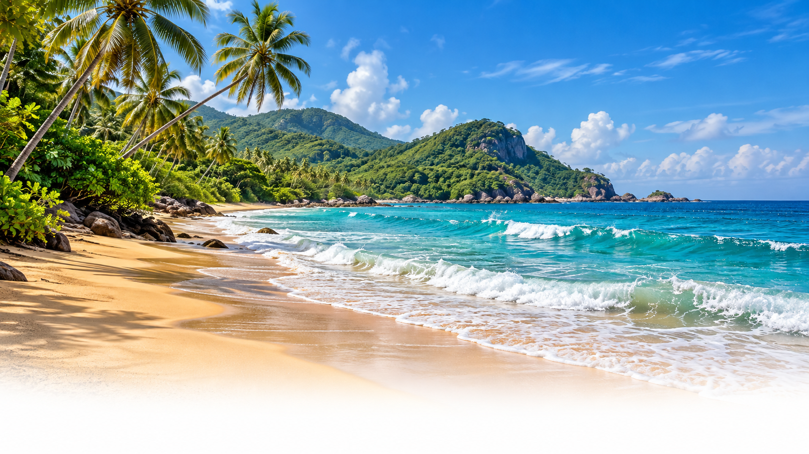
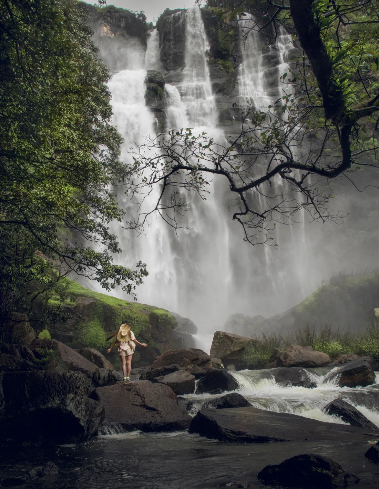
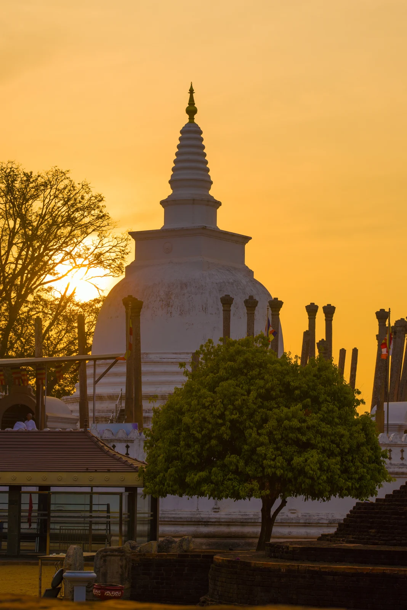
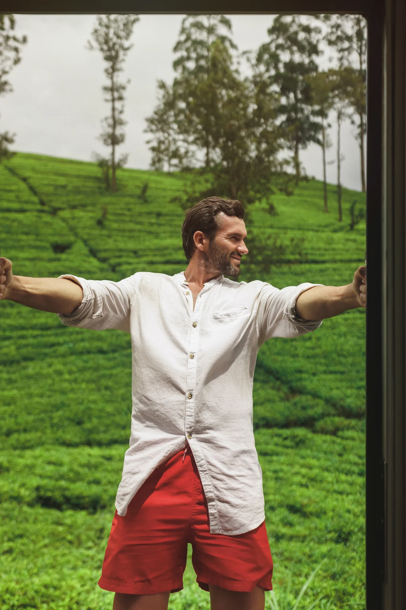

01Find your kind of escape
Slow beach days or a little adventure?
Choose what moves you.
A little wonder. A world of unforgettable.
LESS PLANNING. MORE LIVING.

01Slow beach days or a little adventure?
Choose what moves you.
 02
02Tell us your ideas, your dates,
and the way you love to travel.
Touch down, breathe out,
and let your adventure begin.
Explore, slow down, and take
a little island magic home.
YOUR NEXT CHAPTER
These are trip ideas for your inquiry. Availability and pricing will be confirmed when your journey is planned.
GO WHERE YOU FEEL ALIVE
YOUR NEXT GREAT ESCAPE
Find your own little
corner of Sri Lanka.



A DIFFERENT PERSPECTIVE
Chase the light.
Bring home the story.
 FOR THE CURIOUS AT HEART
FOR THE CURIOUS AT HEARTTOUCH DOWN. SLOW DOWN.
A smooth start to
your island story.
A LITTLE LOCAL KNOW-HOW
Good things to know.
Beautiful places to go.
Loading weather…
H: —° L: —°
PLACES THAT STAY WITH YOU
THE CULTURAL TRIANGLE
An ancient rock fortress, golden light, and a landscape full of stories.
A LITTLE MORE THOUGHT. A LOT MORE YOU.
An island journey should feel like your own. Start with the things you love, and make room for the moments you never planned.
Let's shape your journey ↗Let the tropics take you.Your interests, your dates, your idea of a great escape. Let your wish list guide the conversation.
A morning by the sea or another day in the hills. Build a journey with time to enjoy where you are.
Bring beaches, heritage, wildlife, and hill country into one travel wish list. Follow what makes you curious.
Explore destinations, save your favourites to an inquiry, and put your ideas together in one place.
FIVE WAYS TO FALL FOR THE ISLAND
Choose a starting point. Make the journey your own.
A LITTLE OF EVERYTHING
Ancient landscapes, tea-covered hills, a little wilderness, and a final pause by the ocean.
View full itinerary ↗Route overview · lines connect stops, not driving directions
Suggested routes to inspire your trip. Dates, stays, transport, and experiences are tailored during planning; wildlife sightings and train seats are subject to availability.
YOUR PACE. YOUR PLACES. YOUR STORY.
A few things you love. A little room to dream.
Turn your ideas into a Sri Lanka travel plan that feels like you.
INTERACTIVE SRI LANKA EXPLORER
Discover the places that inspire you and make them part of your island journey.
 01 / 08
01 / 08CENTRAL PROVINCE · CULTURAL TRIANGLE
An ancient rock fortress rising above a sea of green. Come for the history; linger for the landscape.
GOOD JOURNEYS. SHARED STORIES.
Every island journey has a story. A space for our travellers to share the moments, places, and little details that stayed with them.
Traveller stories will appear here.
Tripadvisor reviews are not connected yet.A LITTLE ABOUT US
We’re Ceylon Voyagers.
Your next chapter starts with a little curiosity.
From quiet coastlines to misty tea trails, we bring the island’s many moods together around the way you love to travel. A little discovery. A little room to slow down. And a journey that feels like your own.
Let’s create your story ↗Thoughtfully planned.
Personally yours.
Sample contact details · we’ll update these soon.
LET'S DREAM A LITTLE
Tell us what your perfect escape looks like.
Let's give it a place on the map.
Beaches, culture, wildlife, or a little of everything — start with what you love.
This first design preview saves your inquiry as a draft. Online sending will be connected when contact details are ready.